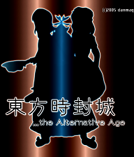

- Welcome to Touhou Wiki!
- Please register to edit. For assistance, check in with our Discord server or IRC channel.
The Alternative Age
...the Alternative Age | |
|---|---|
|
 | |
| Developer |
danmaq|まく (Mc), ひがし (Higashi) |
| Publisher |
danmaq |
| Released |
2005 |
| Genre |
Vertical Danmaku Shooting Game |
| Gameplay |
Single-player story mode |
| Platforms | |
| Requirements |
Direct3D, DirectX 8.1, Except the video cards which max texture size is only 256x256 (e.g. voodoo) |
Touhou Shifuujou ...the Alternative Age (東方時封城 ...the Alternative Age, lit. "Time Seal of the Eastern Castle") is a fan-made Touhou Project game that's a huge script set for Touhou Danmakufu. The size is comparable to the original Touhou Project: 6-stage story mode and extra stage mode are playable. Touhou Danmakufu ver 0.11m or later is required.
Gameplay[edit]
Story[edit]
Music[edit]
There are 18 tracks total in this game, all of which are rearrangements from both the Touhou Project and Seihou Project. The music is generally remixed from the PC-98, the Music CDs, ZUN's Strange Works and Torte Le Magic, of which doesn't include include music from the main games of the Touhou Project.